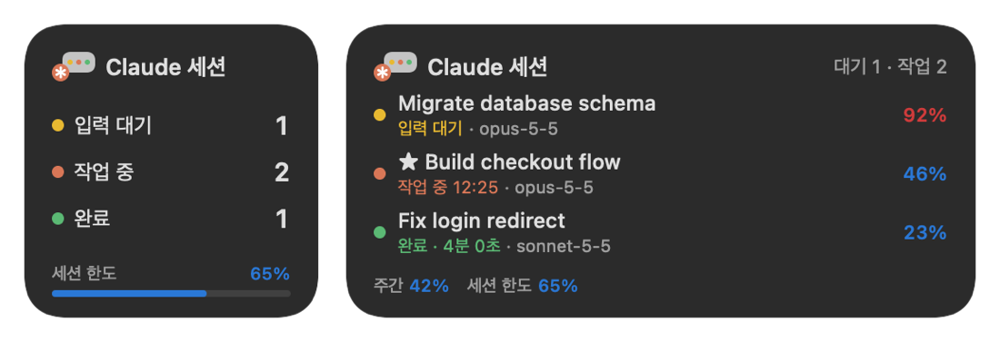

클로드 코드 세션을 한눈에
항상 위에 떠 있는 Windows·macOS 오버레이입니다. 어떤 Claude Code 세션이 작업 중이고 어떤 세션이 내 입력을 기다리는지, 컨텍스트가 얼마나 찼는지, 사용량 한도가 얼마나 남았는지 보이고, 누르면 그 세션으로 바로 갑니다.


기능
세션 현황
작업 중인 세션, 입력을 기다리는 세션, 끝났는데 아직 안 본 세션이 뜹니다.
CLI도, 데스크톱 앱 Code 탭도 다 잡힙니다.
★ 찍어 둔 세션은 늘 보입니다.
눌러서 이동
누르면 그 세션 창이 앞으로 옵니다.
데스크톱 앱에서 화면을 나눠 띄운 세션이면 그 칸 입력창으로 바로 갑니다.
컨텍스트
세션마다 컨텍스트를 몇 % 썼는지 보여 줍니다.
100%가 자동 압축되는 지점입니다.
사용량 한도
맨 위 줄은 주간 사용량, 맨 아래 줄은 5시간 한도입니다.
백그라운드 작업
백그라운드로 돌린 서브에이전트, 셸, 파생 세션은 원래 세션 밑에 접혀 있습니다.
알림
세션이 끝나거나, 입력을 기다리거나, 압축이 가까워지면 소리와 음성으로 알려 줍니다.
화면이 잠겼거나 꺼져 있을 땐 울리지 않습니다.
방해하지 않기
게임처럼 전체 화면인 앱 앞에서는 알아서 숨습니다.
트레이로 내리거나 한 줄로 접을 수 있고, Windows를 켤 때(맥은 로그인할 때) 같이 켜지게 할 수도 있습니다.
메뉴 막대·위젯 (macOS)
메뉴 막대에 상태별 세션 수가 뜹니다.
알림 센터나 바탕화면 위젯으로도 세션과 사용량을 볼 수 있습니다.
다크/라이트, 한국어/영어
테마는 맨 아래 버튼으로 바꿉니다.
언어는 맨 위 줄을 오른쪽 클릭해서 고릅니다.
macOS: 메뉴 막대와 위젯
메뉴 막대의 ✻ 옆에 입력 대기·작업 중·완료 세션 수가 색 점으로 뜹니다.
누르면 세션 목록, 주간·5시간 사용량, 설정이 펼쳐지고, 세션을 고르면 그 세션으로 갑니다.
Terminal·iTerm2에서 띄운 세션은 그 탭까지 찾아갑니다.
위젯은 알림 센터(시계를 눌러 여는 옆 창)와 바탕화면 어디에나 둘 수 있습니다.
작게(상태별 개수와 5시간 한도), 중간(세션 3개), 크게(세션 7개와 사용량 바), 바탕화면용 아주 크게(개수·사용량과 세션 7개)가 있습니다.
작업 중인 세션의 경과 시간은 위젯이 알아서 셉니다.
macOS 26 이상이면 제어 센터나 메뉴 막대에 "Claude 세션" 컨트롤도 넣을 수 있습니다.
입력 대기 세션 수가 보이고, 누르면 그 세션이 열립니다.

설치
Windows
ClaudeSessionOverlay.exe를 받아 실행합니다. 파일 하나라 원하는 폴더에 두면 됩니다. README와 선택 사항인 Mod가 든 zip은 릴리스 페이지에 있습니다.- 처음 실행하면 Windows 시작 시 같이 실행할지 묻습니다. 나중에 트레이 아이콘 메뉴의 Windows 시작 시 실행에서 바꿀 수 있습니다.
서명되지 않은 앱이라 처음 실행할 때 Windows SmartScreen 경고가 뜰 수 있습니다. 추가 정보 → 실행을 누르면 됩니다.
설치해서 쓰고 싶다면 ClaudeSessionOverlay-Setup.exe를 받으세요. 관리자 권한 없이 %LOCALAPPDATA%\Programs에 설치하고 시작 메뉴에 바로 가기를 만들며, Windows 시작 시 실행과 session-hud Mod를 설치하면서 고를 수 있습니다. 자세한 내용은 Windows 설치 가이드에 있습니다.
macOS
macOS 11 이상(위젯은 macOS 14 이상), Apple Silicon과 Intel 모두 됩니다.
- Apple Silicon(M1 이후)용 DMG 또는 Intel용 DMG를 받습니다.
- DMG를 열고 Claude Session Overlay를 Applications 폴더로 끌어다 놓습니다.
- 응용 프로그램 폴더에서 실행하면 메뉴 막대에 ✻ 아이콘이 생기고, 처음 실행하면 로그인할 때 같이 열지 묻습니다(나중에 메뉴의 로그인 시 열기에서 바꿉니다).
- 위젯: 바탕화면을 오른쪽 클릭 → 위젯 편집 → "Claude Session Overlay"를 찾아 추가합니다.
아직 Apple 공증을 받지 않은 앱이라 처음 열 때 경고가 뜹니다. 시스템 설정 → 개인정보 보호 및 보안 아래쪽의 그래도 열기를 누르세요.
터미널에서 한 줄로 설치하면 경고 없이 설치되고 바로 실행됩니다.
curl -fsSL https://claude-overlay.jsuk.cloud/install.sh | bash메뉴 막대, 위젯, 제어 센터 설정은 macOS 설치 가이드에 차례대로 적어 두었습니다.
동작 방식
오버레이는 Claude Code와 Claude 데스크톱 앱이 원래 남기는 로컬 파일만 읽습니다. 네트워크 요청을 보내지 않고, 로그인 정보도 건드리지 않습니다.
| 정보 | 출처 |
|---|---|
| 세션과 상태 | ~/.claude/sessions/<pid>.json |
| 모델, 컨텍스트 토큰, 백그라운드 작업 | ~/.claude/projects/<프로젝트>/<세션>.jsonl |
| 컨텍스트 창, 자동 압축 기준 | ~/.claude/cache/model-catalog/*.json, ~/.claude/settings.json |
| 주간·5시간 사용량 | Claude 데스크톱 앱의 plan-usage-history.json |
함께 들어 있는 선택 사항인 Claude Code Mod session-hud를 설치하면 세션별 비용, 사용량 한도 초기화 시각, 압축 버튼이 더해집니다.
읽고 쓰는 파일 전체 목록은 오버레이가 내 컴퓨터에서 읽는 것에 있습니다.
자주 묻는 질문
클로드 코드 세션의 컨텍스트 사용량은 어떻게 보나요?
세션마다 % 숫자가 보입니다. Claude Code가 대화를 자동 압축하는 지점을 100%로 잡은 값이고, 75% 미만은 파랑, 90% 미만은 노랑, 그 이상은 빨강입니다.
Windows에서 클로드 주간 사용량과 5시간 한도를 볼 수 있나요?
네. 머리 줄에 주간 사용량, 맨 아래 줄에 5시간 세션 한도가 보입니다. Claude 데스크톱 앱이 남기는 로컬 사용량 기록을 읽습니다.
Claude Code CLI와 데스크톱 앱 둘 다 되나요?
네. 어느 터미널에서 띄운 CLI 세션이든, 데스크톱 앱 Code 탭 세션이든 한 목록에 함께 보입니다.
맥(macOS) 버전도 있나요?
네. macOS 11 이상에서 메뉴 막대 앱으로 돌고, Apple Silicon·Intel용 DMG를 받을 수 있습니다. 메뉴 막대에 상태별 세션 수를, 위젯에 세션 목록과 사용량을 보여 줍니다. 데스크톱 앱 세션은 눌러서 바로 열고, 터미널 세션은 Terminal·iTerm2면 그 탭까지 골라 앞으로 가져옵니다.
컨텍스트 창은 70%만 썼는데 왜 84%로 나오나요?
Claude Code는 창이 꽉 차기 전에 요약할 자리와 여유분을 남기고 압축합니다. 20만 토큰 모델이면 자동 압축 지점이 약 16만7천 토큰이라 오버레이는 그 값을 기준으로 잽니다. 100%는 곧 압축된다는 뜻입니다.
Claude 데스크톱 앱이 꼭 있어야 하나요?
세션 목록과 컨텍스트 사용량은 Claude Code 자체 파일에서 읽으므로 없어도 됩니다. 주간·5시간 사용량 한도는 데스크톱 앱이 저장하는 사용량 기록에서 읽어서, 이것만은 데스크톱 앱을 설치하고 로그인해 둬야 합니다. 선택 사항인 session-hud Mod로도 채울 수 있습니다.
안전한가요? 코드나 대화를 어디로 보내지 않나요?
보내지 않습니다. 오버레이는 로컬 파일만 읽고, 네트워크 요청을 보내지 않으며, 로그인 토큰이나 API 키를 읽지 않습니다. MIT 라이선스 오픈소스입니다.
무료인가요?
네. 계정, 구독, 사용 통계 수집 없이 무료로 쓰는 오픈소스입니다.
가이드
- 클로드 코드 컨텍스트 사용량 확인하고 자동 압축 시점 미리 보기컨텍스트 창이 무엇인지, Claude Code가 언제 대화를 자동 압축하는지, 내 모델의 압축 기준을 계산하는 법, 세션 여러 개의 컨텍스트를 한꺼번에 지켜보는 법을 정리했습니다.
- 클로드 주간·5시간 사용량 한도, 남은 양 확인하는 법Claude 구독 요금제는 5시간 창과 주간 창 두 가지로 사용량을 잽니다. 두 한도가 Claude Code 세션과 어떻게 맞물리는지, 작업하면서 둘 다 계속 보는 법을 정리했습니다.
- 클로드 코드 세션 여러 개를 동시에 돌릴 때 놓치지 않는 법Claude Code 세션을 여러 개 띄우면 빠르지만, 하나가 권한 확인에서 20분씩 멈춰 있기도 합니다. 세션마다 상태를 한눈에 보고, 내 차례가 오면 알림을 받고, 눌러서 바로 그 세션으로 가는 법.
- Windows 설치: 실행 파일과 설치 파일, SmartScreen 경고, session-hud ModWindows에서 어떤 파일을 받을지, SmartScreen 경고를 넘기는 법, Windows 시작 시 실행, Claude Code에 session-hud Mod 넣기, 문제가 있을 때 쓰는 명령줄 옵션까지 차례대로 정리했습니다.
- macOS 설치: 처음 실행 경고 넘기기, 메뉴 막대와 위젯 설정Apple Silicon·Intel 맥에 설치하는 법, '열 수 없습니다' 경고를 넘기는 법, 메뉴 막대 항목과 알림 센터 위젯, macOS 26 제어 센터 컨트롤까지 정리했습니다.
- 클로드 세션 오버레이가 내 컴퓨터에서 읽는 것, 절대 건드리지 않는 것오버레이는 Claude Code와 Claude 데스크톱 앱이 원래 남기는 파일만 읽습니다. 무엇을 읽고 무엇을 쓰는지 파일 단위로 정리하고, 네트워크 요청을 보내지 않고 로그인 정보를 읽지 않는 이유를 적었습니다.